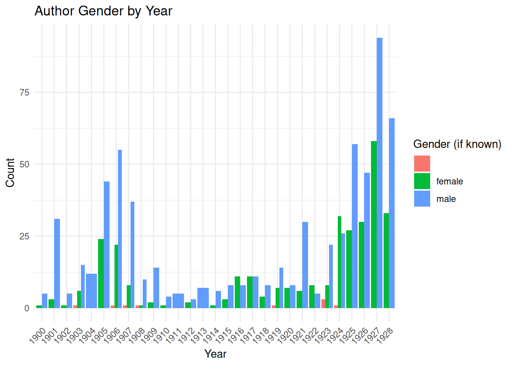

Code
library(dplyr)
library(ggplot2)February 26, 2024
These exercises explore data about African American periodical poetry from 1900–1928, originally compiled by Amardeep Singh and Kate Hennessey at Lehigh University. For more context about the dataset, see the data essay.
Concepts covered:
| title | author..first.last. | author..last.name. | text | month | year | venue | edited.by | form..if.known. | gender..if.known. | themes | second.venue | published.in..city. | Magazine.Type | Author.Bio. |
|---|---|---|---|---|---|---|---|---|---|---|---|---|---|---|
| New Wars | Benjamin Griffith Brawley | Brawley | HURL on the lance! Break up the ancient peace! |
Now let the arrow hiss in air and sing; Now let the spear-point on the armor ring; Sound forth the call to wars that never cease!
Ye hoot the yellow Mongol from your land; But forth to regions all his own ye go To reap the riches of his overflow, And just ye call the working of your hand!
Now see the scramble of the Christian host– Them all press forward for the spoil that’s won; New wars! new wars! ris’n on the olden one– And this, this the enlightened freeman’s boast!
But greater is the strife than here would seem, And wider realms embracing than the East, For that is but the remnant of the feast. I had a vision. (Was it all a dream?)
The weary Titan groaned beneath the weight Of nations growing weaker day by day, Whose men he deemed but men of minor clay, And destinies he wrought for them their fate.
And why, methought, does not the giant’s creed Cast off the weaklings that would warp his might, And leave alone the wretches in their plight? No answer save “I would not” from his greed.
So freedom hails th’ advance of king and queen; The march of mind goes on o’er field and flood; Republics curb the weak with shows of blood; And lordly priests profess the Nazarene!
Yet hear the trumpet and the cannon’s roar, The orphan’s crying and the widow’s wail; But what of them? Unfurl the sail! flay! flail! On! on! on to the mighty breach once more! |November | 1900|Colored American |Walter W. Wallace |Common Measure |male |Spanish-American War, Empire | |Boston |Predom. Black |https://en.wikipedia.org/wiki/Benjamin_Griffith_Brawley | |A Picture |Olivia Ward Bush-Banks |Bush-Banks |I drew a picture long ago — A picture of a sullen sea; A picture that I value now Because it clears Life’s mystery. My sea was dark and full of gloom; I painted rocks of sombre hue. My sky alone bespoke of light, And that I painted palest blue. But e’en across my sky of blue Stretched troubled clouds of sodden gray, Through which the sun shone weak and dim, With only here and there a ray. Around my rocks the yellow foam Seemed surging, moaning in despair As if the waves, their fury spent, Left naught but desolation there. Three crafts with fluttering sails I drew, And one sailed near the rocks of gray, The other on its westward course, Went speeding out of danger’s way. The other still outdistanced them Where sky and water seemed to meet. I painted that with sails full set, And then my picture was complete. My life was like the sullen sea, Misfortune’s woes, my rocks of gray; The crafts portrayed Life’s changing scenes, The clouded sky Life’s troubled Day I long to paint that picture o’er, Without the rocks of sombre hue; Without the troubled clouds of gray, I’ll paint the sky of brightest blue. My sea shall lay in calm repose, No hint of surging, moaning sigh. My crafts, unhindered by the rocks, Shall speed in joyous swiftness by. But this will be when brightest hours Of hope and cheer are given me. I’ll paint this picture when Life’s sun Shines clear upon Prosperity. |June | 1900|Colored American |Walter W. Wallace |Common Measure |female | | |Boston |Predom. Black |https://en.wikipedia.org/wiki/Olivia_Ward_Bush-Banks | |The Christmas Reunion |Augustus M. Hodges |Hodges |Twas a bright Christmas morning in “Ole Kentuck”; Aunt Sallie was busy disrobing a duck- A featherless turkey close by her side lay, Prepared for the dinner that bright Christmas day. ‘Twas a family reunion, and Uncle Joe Moore And his good wife Aunt Sallie, both ten and threescore, Had gathered around them their “girls” and their “boys,” With these “children’s” children - the grandparents’ joys. The “girls” (all past thirty) were helping to make The “sweet tater puddin’s,” the pies, and the cake; The “boys” and the grand-boys the fires were making, The oldest granddaughter the biscuits was baking, The little grandchildren a dozen or more Were tumbling about just outside of the door; While Uncle Joe Moore, the venerable sire, Sat smoking his pipe with his back to the fire. When the clock tolled the midday the feast was complete, And after each member had taken his seat, The venerable sire rose up from his chair, And with uplifted arms he offered this prayer: “We thank Thee, our Father in heaven,” he said, “For the abundance of good things before us now spread; We thank Thee, dear Lord, that I and my wife Have been spared by thy goodness to reach an old life; We thank Thee, of all things, the sweetest and best, For our dear children’s presence from North, South and West. Continue Thy blessings, Thy goodness, Thy love, And prepare us to meet Thee in heaven above.” The grace being over the feast was begun. The duck and the turkey were carved one by one; The big chicken pot-pie received the same fate, And a generous helping was piled on each plate. After the meats came the puddings and pies; Then how the grandchildren all opened their eyes When one of their uncles from far Illinois Brought out from the closet a basket of toys. As dinner was over, the venerable sire Rose up from his seat and stood by the fire, Where he called to his side each lamb of his fold, And blessed and caressed them like Jacob of old. “What changes we’ve seen, Sal,” remarked Uncle Joe, “These years we’ve been married, some forty or so. Now let me see, forty? Yes, forty-one years Today, since we met at Uncle Bill Steer’s. I remember, ole ‘oman, you looked mighty gran’, And I was then, children, er good-lookin’ man. I walked with your mother from Clayton that night, And ‘fore we got home, why I got in a fight. Tom Scott, a ’patroller,’ insulted your mother, So I knocked him down, and Ed, his big brother. I then asked your mother if she’d be my wife. Her answer was: ‘Yes, Joe, since you risked your life For me up the road, and licked old Tom Scott, Yes, I’ll be your wife; why, Joseph, why not?’ But the next day, my children, my master sold me To an ole Nigger trader’ from East Tennessee, Where I worked on a farm without seeing your mother For eighty long days, till me and another. Plantation hand run away and met with good luck, For we soon found ourselves on the soil of Kentuck. ’Fore my ole master knowed I run erway We two was married that same Christmas day. We was married at Scottsville by ole Peter Brown, Who was a white minister that lived in the town, And would marry us slave folks no matter or not If our masters was willing, if we only had got A couple of chickens or a barrel of corn. The very next Christmas our Lucy was born, And the next of the past that I now can remember Is when we moved here the following September. Then came the war, Sal, and ole marster died, While Missus and you, Sal, stood by his side. Then I left you and children, and went out to fight For the Union and Freedom one warm summer’s night. Then good Abr’am Lincoln, he sot us all free, And we had in the county a big jubilee. Then you boys and you girls all worked hand to hand To buy me and your mother this house and this land. Then some of you married, and some went out West, While me and your mother, along with the rest, Stayed on the old homestead and worked night and day, A farming and trucking, and made the work pay. We are glad for to meet you all back here once more, And see your dear babies together, before
Sat smoking his pipe with his back to the fire. Me and your mother (we are both old and gray) Receive old Death’s summons to call us away. God bless you, my children, through life, is my prayer,” And the venerable sire sat down in his chair. The rest of the evening was passed in a measure Receiving old friends or by chatting in pleasure Till long after midnight, with hearts light and gay. ’Twas a happy reunion that bright Christmas day. |December | 1900|Colored American |Walter W. Wallace | |male |Slavery | |Boston |Predom. Black |https://en.wikipedia.org/wiki/Augustus_M._Hodges | |A Memorial of Frederick Douglass |C. Henry Holmes |Holmes |He was a noble hero, born in an humble state, But with a will like Nero, his cruel chains did break. If in the glorious transept, worth and fitness reign, If in the unknown regions, all are rewarded the same, If to the hero modern, honor is rightly given, His is a sapphired crown in the bright kingdom of heaven. Tell of sagacious raids on the black tiller of soil, Bringing from under-byways Into freedom’s sunshine and joy. Tell of the noble plea the companion of martyred John Brown, Earth but records - heaven rewards The worthy with worthy renown. Tell of the noble traits of character true as steel, Tell of the fear-fraught days which every true patriot feels. Tell of the powerful mind that forces the just decree, Fair Ethiope placed with thee her hopes in blessed security. Wet are the cheeks of millions; loudly do they lament, Whence thou art swiftly riven from the mundane transient. Death- unsatiable devourer thou checkmate of good men’s deeds, - Visiting earth each hour, unmindful of worldly needs, But to thy name and prestige, posterity ever lauds, Honor in life, happy in death, near the throne of the living God. |September | 1900|Colored American |Walter W. Wallace |Elegy |male |Frederick Douglass | |Boston |Predom. Black | | |The Negro’s Worth |Alonzo Milton Skrine |Skrine |Who casts a slur on Negro worth, a stain on Negro fame? Who dreads to own his Negro blood, or hear his Negro name? Who scorns the warmth of Negro hearts [illegible] the clasp of Negro hands? If he but shows his traitor’s face, we [illegible] him where he stands.
The Negro’s blood! Its crimson tide has watered hill and plain Wherever there were wrongs to crush, or freemen’s rights to gain. No dastard thought, no cowardly fear his had it tamely by When there were noble deeds to do [illegible] to die.
The Negro’s heart! The Negro’s heart! God keeping pure and free The fullness of its kindly thought its wealth of honest glee; Its generous strength; its ardent faith; its uncomplaining trust; Though every worshipped idol break and crumble into dust.
The Negro’s hands! Ah, lift them up. made strong by honest toil. The champion of the Civil War and of the Cuban soil: Their battle swords they flash aloft, though death in front they see ; The Negro’s hands did valiant deeds tot brave Cuba free.
They bore the old flag bravely, and were there at Lincoln’s call. They stood beside the foremost rank, with the bravest of them all. And when before the enemy’s guns they held the Gray at bay — O never could the Afric heart beat prouder than that day.
So if some proud Caucasian cavils at the darkness of your race, Or speaks in scorn of Africa before her children’s face, Then lay aside the flag of truce, and denounce him where he stands For Negro’s worth and Negro’s fame were won by Negro’s hands.
Published in Colored American Magazine, December 1900 |December | 1900|Colored American |Walter W. Wallace | |male |Civil War, Spanish-American War, Labor, Slavery, Progress and Racial Uplift | |Boston |Predom. Black |https://scalar.lehigh.edu/african-american-poetry-a-digital-anthology/charles-frederick-white-author-page | |Afro-American |Charles Frederick White |White |O, country, ’tis of thee, Land of the Lynching Bee, Of thee I sing. How long will this base wrong Pollute thy freedom’s song? Perpetrated by a throng Of heartless fiends. My native country, thee, How I long to be free! Thy name to love. I long to se ethe time When this most heinous crime Will be changed to deeds divine, Like those above. Let wailings swell the breeze, And ring from all the trees: “God’s will be done.” Let mortal souls awake– Let all that breathe partake– This spell of crimes to break, Ere the nation’s gone. O gracious God, to thee, In thine all-wise mercy, We now appeal! May this land soon be brought Out of this doome it’s wrought; For long, in vain, we’ve sought Freedom to feel. |September | 1900|Colored American |Walter W. Wallace | |male |Lynching and Racialized Violence, Patriotism, Racism | |Boston |Predom. Black |https://scalar.lehigh.edu/african-american-poetry-a-digital-anthology/charles-frederick-white-author-page |
female male
9 317 657 | year | gender..if.known. | count |
|---|---|---|
| 1900 | female | 1 |
| 1900 | male | 5 |
| 1901 | female | 3 |
| 1901 | male | 31 |
| 1902 | female | 1 |
| 1902 | male | 5 |
| 1903 | 1 | |
| 1903 | female | 6 |
| 1903 | male | 15 |
| 1904 | male | 12 |
| 1905 | female | 24 |
| 1905 | male | 44 |
| 1906 | 1 | |
| 1906 | female | 22 |
| 1906 | male | 55 |
| 1907 | 1 | |
| 1907 | female | 8 |
| 1907 | male | 37 |
| 1908 | 1 | |
| 1908 | female | 1 |
| 1908 | male | 10 |
| 1909 | female | 2 |
| 1909 | male | 14 |
| 1910 | female | 1 |
| 1910 | male | 4 |
| 1911 | male | 5 |
| 1912 | female | 2 |
| 1912 | male | 3 |
| 1913 | male | 7 |
| 1914 | female | 1 |
| 1914 | male | 6 |
| 1915 | female | 3 |
| 1915 | male | 8 |
| 1916 | female | 11 |
| 1916 | male | 8 |
| 1917 | female | 11 |
| 1917 | male | 11 |
| 1918 | female | 4 |
| 1918 | male | 8 |
| 1919 | 1 | |
| 1919 | female | 7 |
| 1919 | male | 14 |
| 1920 | female | 7 |
| 1920 | male | 8 |
| 1921 | female | 6 |
| 1921 | male | 30 |
| 1922 | female | 8 |
| 1922 | male | 5 |
| 1923 | 3 | |
| 1923 | female | 8 |
| 1923 | male | 22 |
| 1924 | 1 | |
| 1924 | female | 32 |
| 1924 | male | 26 |
| 1925 | female | 27 |
| 1925 | male | 57 |
| 1926 | female | 30 |
| 1926 | male | 47 |
| 1927 | female | 58 |
| 1927 | male | 94 |
| 1928 | female | 33 |
| 1928 | male | 66 |
ggplot(aa_gender_by_year, aes(x = factor(year), y = count, fill = gender..if.known.)) +
geom_bar(stat = "identity", position = "dodge") +
labs(title = "Author Gender by Year",
x = "Year",
y = "Count",
fill = "Gender (if known)") +
theme_minimal() +
theme(axis.text.x = element_text(angle = 45, hjust = 1))
---
title: "Visualize Author Gender By Year (Solution)"
date: "2024-02-26"
categories: [ggplot2, dplyr, line-plot, bar-plot, groupby, R, solution, exercise]
toc: true
format:
html: default
code-overflow: wrap
code-fold: show
editor: visual
df-print: kable
R.options:
warn: false
code-tools: true
execute:
eval: true
message: false
warning: false
---
These exercises explore data about African American periodical poetry from 1900–1928, originally compiled by Amardeep Singh and Kate Hennessey at Lehigh University. For more context about the dataset, see the [data essay](../aa-periodical-poetry.qmd).
**Concepts covered:**
- Groupby with multiple columns
- Value counts within groups
- Line plots and bar plots with categorical coloring (ggplot2)
# Load libraries
```{r}
library(dplyr)
library(ggplot2)
```
# Read in CSV
```{r}
aa_df <- read.csv("https://raw.githubusercontent.com/melaniewalsh/responsible-datasets-in-context/main/datasets/aa-periodical-poetry/African-American-Periodical-Poetry_1900-1928-Created-by-Amardeep-Singh-and-Kate-Hennessey,-Lehigh-University.csv",
stringsAsFactors = FALSE)
```
# View first 5 rows
```{r}
head(aa_df)
table(aa_df$gender..if.known.)
```
# Group by year, count instances of author by gender
```{r}
aa_gender_by_year <- aa_df %>%
group_by(year, gender..if.known.) %>%
summarize(count = n(), .groups = "drop")
aa_gender_by_year
```
# Visualize with ggplot2 - Line Plot
```{r}
ggplot(aa_gender_by_year, aes(x = year, y = count, color = gender..if.known.)) +
geom_line() +
scale_x_continuous(breaks = seq(1900, 1930, by = 5)) +
labs(title = "Author Gender by Year",
x = "Year",
y = "Count",
color = "Gender (if known)") +
theme_minimal()
```
# Visualize with ggplot2 - Bar Plot
```{r}
ggplot(aa_gender_by_year, aes(x = factor(year), y = count, fill = gender..if.known.)) +
geom_bar(stat = "identity", position = "dodge") +
labs(title = "Author Gender by Year",
x = "Year",
y = "Count",
fill = "Gender (if known)") +
theme_minimal() +
theme(axis.text.x = element_text(angle = 45, hjust = 1))
```